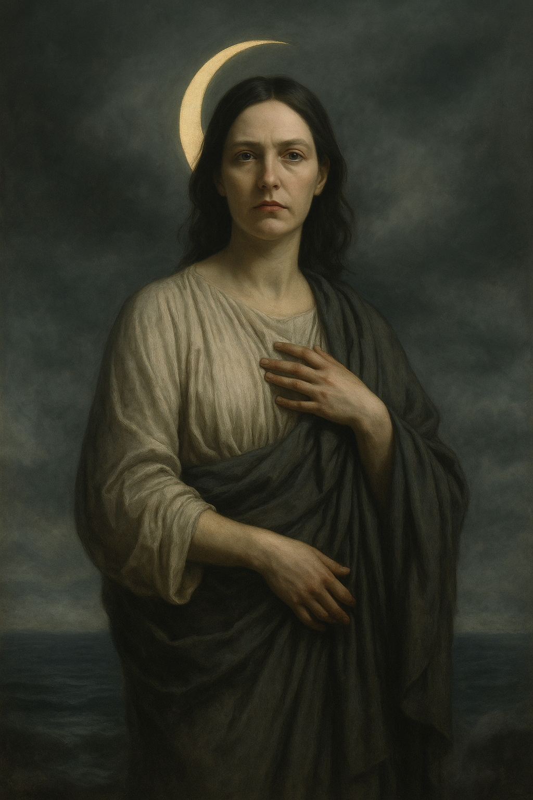
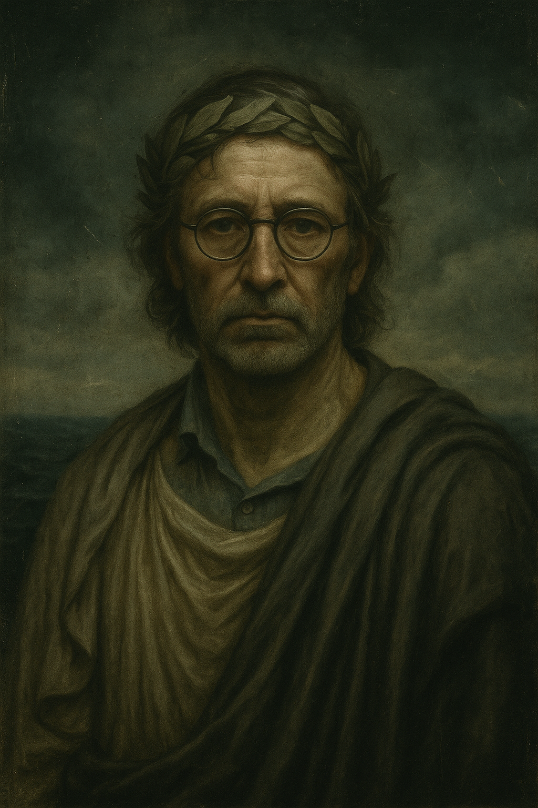

[ Entry Missing ]
Fragments recovered from corrupted metadata

Presumed likeness: Stanton–Luna composite. Archive attribution uncertain.

Recovered visual: Calvert–Tiberius simulation.
Do not circulate.
/?have you seen me}}{